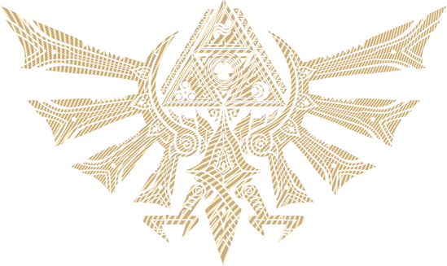
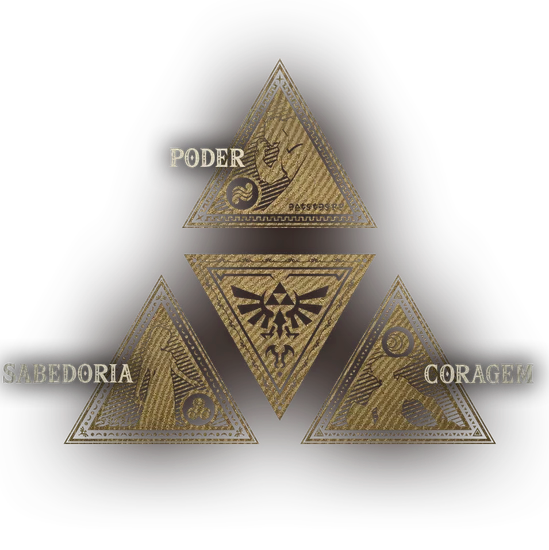
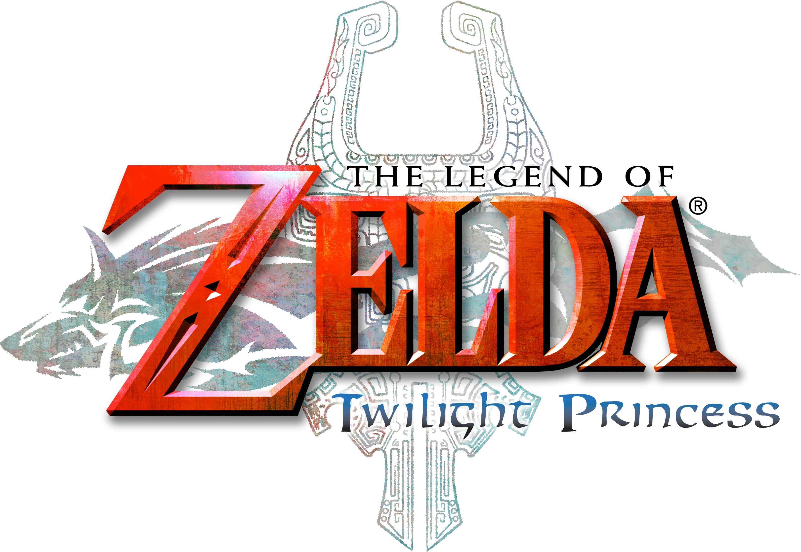
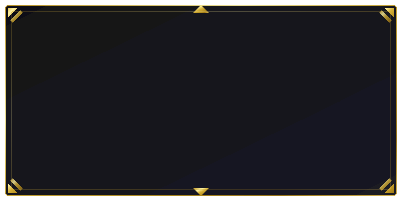

A Triforce
O lendário artefato sagrado que contem o poder das deusas: A Triforce
Em uma era de caos e vazio, o mundo de Hyrule foi criado por tres deusas. Din, a deusa do
Poder, criou a terra e o magma; Nayru, a deusa da Sabedoria, criou as leis que regem o mundo; e Farore, a deusa
da
Coragem, criou a vida que o habita.
As deusas deixaram para trás, nesta terra, o Triângulo Sagrado Dourado — a Triforce.
Trata-se de um artefato divino que concede os desejos daqueles que o tocam.
Quem empunha o poder da Triforce deve possuir um equilibrio entre Força, Sabedoria e
Coragem.
Se alguém indigno a tocar, o triângulo sagrado se dividirá em três partes.
Esse poder tem sido transmitido ao longo de gerações por membros da linhagem real de Hyrule e por heróis
escolhidos.

Os Portadores
Figuras lendárias que ressurgem entre as eras
A Triforce foi dividida em três partes. Essas partes residiriam em três indivíduos escolhidos. Link
receberia a Triforce da Coragem; a Princesa Zelda, a Triforce da Sabedoria; e Ganondorf, a Triforce do Poder.
A série The Legend of Zelda é uma coletânea de histórias de diversas épocas, entrelaçadas na terra de
Hyrule; trata-se de uma saga heroica sobre o destino de Link, que gira em torno da Triforce, envolvendo também
a Princesa Zelda e Ganondorf.


Zelda Twilight Princess e um jogo de fantasia que se passa entre dois mundos conflitantes, o Reino Twili e
o
Reino da Luz...
Nossa historia comeca com Link, um jovem do vilarejo de Ordon que vivia uma vida pacata ajudando os
moradores com seu cavalo Epona